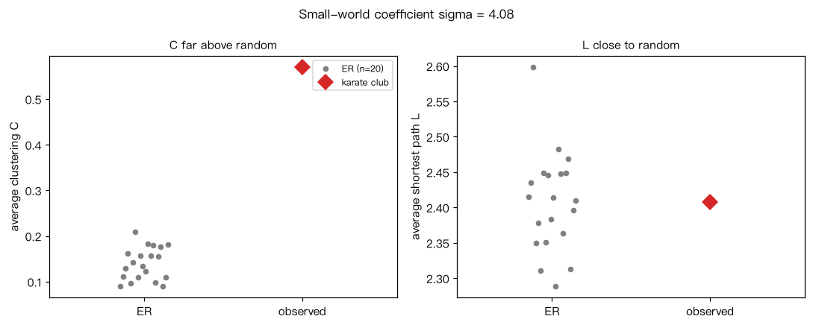
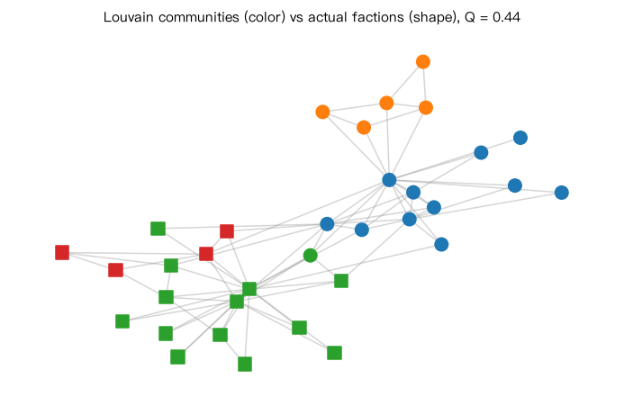
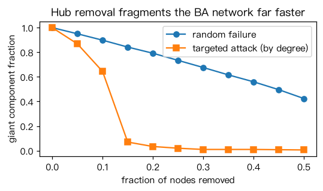
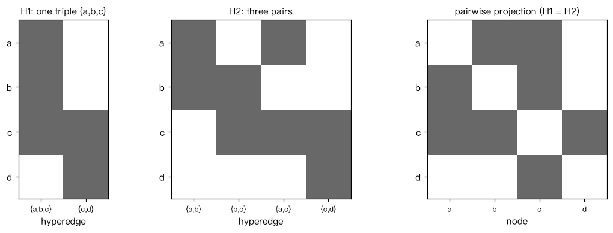
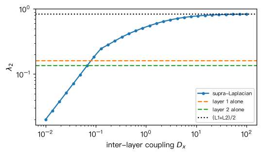

结果呈现与研究前沿
怎样用图表和报告可信地呈现网络分析结果，以及高阶、时间、多层网络与图表示学习等前沿方向
一项网络分析最终要以图表和文字的形式被他人阅读、检验和使用。本专题的前半部分讨论结果呈现：怎样让每张图回答一个问题并带上对照与不确定性，网络图本身怎样画才不误导，一篇网络分析报告应包含哪些部分、方法部分怎样写才能被复现，口头报告怎样组织，以及怎样审阅他人的网络分析研究。
后半部分把各专题串联起来：先概括贯穿网络科学的五条主线——度与枢纽、模块、网络上的过程、网络是构建出来的、与什么比较；再分页介绍超越“静态、单层、两两相互作用”这一经典网络表示的几个前沿方向：
- 高阶相互作用：用超图和单纯复形描述三个及以上元素的群体作用，并以拓扑数据分析（持续同调）刻画加权网络的“形状”；
- 时间网络：边只在特定时刻存在时，传播必须沿时间一致的路径进行；
- 多层与相互依赖网络：多种关系、多种组学或多个模态放在同一个数学对象里；
- 网络表示学习与图神经网络：把节点、边或整张图映射为向量，用于预测药物–靶点关系、蛋白质功能和脑网络分类；
- 可解释性与因果：预测性能好的模型是否告诉我们机制，统计依赖的网络能否回答干预问题。
每个方向都给出定义、可手算的小例子、代表性文献与开放问题，研究前沿与开放问题一页把它们汇总成表。几个方向的共同教训是：表示方法越复杂，“节点和边怎样定义、与什么比较、结论对分析选择是否稳健”这些老问题就越重要。
本专题与网络分析流程与 NetworkX 实践、研究问题、可复现分析与敏感性分析共同构成“计算方法与研究规范”领域：前两者讨论怎样做出可信的分析，本专题讨论怎样把它可信地呈现出来，以及方法还可以向哪里发展。
Contents知识页面
INTERACTIVE交互可视化
CODE计算实现
13 个完整可运行的 Python 示例，每个都给出代码、输出图和解读；可在浏览器中直接运行，或下载 Jupyter Notebook · Python 脚本。

小世界性——与同规模 ER 随机图比较
社团检测与已知分组的一致性
鲁棒性——随机失效与蓄意攻击（双曲线对照图） 度保持零模型与“真实值 vs 零分布”图
度保持零模型与“真实值 vs 零分布”图 同一个网络的两种画法——节点–链接图与按社团排序的邻接矩阵
同一个网络的两种画法——节点–链接图与按社团排序的邻接矩阵
超图与它的两两投影——投影会丢失信息 单纯复形的贝蒂数——空心三角形与实心三角形
单纯复形的贝蒂数——空心三角形与实心三角形 持续同调入门——加权网络在阈值过滤下的贝蒂曲线
持续同调入门——加权网络在阈值过滤下的贝蒂曲线 时间网络——时间一致路径与聚合网络的可达性
时间网络——时间一致路径与聚合网络的可达性
多层网络的超拉普拉斯矩阵与层间耦合 节点嵌入——谱嵌入、node2vec 式随机游走嵌入与简单基线的链接预测比较
节点嵌入——谱嵌入、node2vec 式随机游走嵌入与简单基线的链接预测比较 从零实现两层图卷积网络（GCN）做半监督节点分类，并与标签传播比较
从零实现两层图卷积网络（GCN）做半监督节点分类，并与标签传播比较 过平滑——反复做图卷积后节点表示趋于一致
过平滑——反复做图卷积后节点表示趋于一致References核心文献
Bassett & Sporns 2017：Network neuroscience
- 背景：网络科学进入神经科学后，需要一个统一的视角来整合从分子到行为的多尺度网络。Nature Neuroscience 20:353–364，DOI 10.1038/nn.4502。
- 核心内容：综述网络神经科学的核心概念（模块、枢纽、动态、控制）及其跨尺度应用，讨论多层网络和网络控制等方向。
- 阅读提示：读的时候对照贯穿网络科学的五条主线，标出文中对应的段落；这篇文章几乎覆盖了网络结构指标、网络模型、社团结构、传播、同步、可控性与脑网络等专题的概念。
- 思考题：文中提到的哪一个方向与你的研究最接近？若把你的研究推进一步，会用到哪个专题的方法？
Battiston 等 2020：Networks beyond pairwise interactions: structure and dynamics
- 背景：两两相互作用的网络框架能否描述群体相互作用？Physics Reports 874:1–92，DOI 10.1016/j.physrep.2020.05.004。
- 核心内容：系统介绍超图、单纯复形等高阶表示，高阶网络上的随机游走、传播、同步等动力学，以及在脑、生态、社会系统中的应用。
- 阅读提示：篇幅很长，建议只读引言和与网络上的传播与免疫、同步与协同动力学相关的传播、同步章节；数学细节可以跳过。对照高阶相互作用：超图与单纯复形中的定义与算例。
- 思考题：在你的研究对象中，有哪些“三个以上元素同时作用”的现象被两两网络遗漏了？
Holme & Saramäki 2012：Temporal networks
- 背景：接触、通信与神经活动都发生在特定时刻，静态网络无法表示时间顺序。Physics Reports 519(3):97–125，DOI 10.1016/j.physrep.2012.03.001。
- 核心内容：时间网络的表示（接触序列、区间图）、时间一致路径与可达性、时间网络上的中心性与基序、随机化参照模型，以及传播等动力学过程。
- 阅读提示：重点读时间一致路径和随机化参照模型两部分，对照时间网络中的算例与代码。
- 思考题：你的数据如果有时间戳，聚合成静态网络时丢失了什么？用哪种随机化可以检验这些信息是否重要？
Kivelä 等 2014：Multilayer networks
- 背景：多重网络、时间网络、相互依赖网络等概念在不同文献中名称和定义各异。Journal of Complex Networks 2(3):203–271，DOI 10.1093/comnet/cnu016。
- 核心内容：提出以节点–层二元组为基础的统一框架与术语，整理了多层网络的结构指标、动力学与各类特例之间的对应关系，是多组学网络的理论基础。
- 阅读提示：先读一般定义与特例分类部分，再对照多层与相互依赖网络与多层网络。
- 思考题：你的多组学或多模态数据中，哪些层共享同一组节点（多重网络），哪些层是不同类型的实体（需要层间依赖边）？
Grover & Leskovec 2016：node2vec: Scalable feature learning for networks
- 背景：怎样从网络结构中自动学习节点特征，同时兼顾社团（同质性）与结构角色？Proceedings of the 22nd ACM SIGKDD，855–864，DOI 10.1145/2939672.2939754。
- 核心内容：用参数 、 控制的二阶有偏随机游走生成节点序列，再用 skip-gram 学习嵌入，在节点分类与链接预测上与 DeepWalk 等方法比较。
- 阅读提示：对照网络表示学习中的转移概率算例；注意链接预测实验中测试边如何从网络中移除、负样本如何选取。
- 思考题：在 PPI 网络上，你希望嵌入捕捉的是“同一复合物”（社团）还是“同为枢纽”（结构角色）？ 应如何选择？
Zitnik、Agrawal 与 Leskovec 2018：Modeling polypharmacy side effects with graph convolutional networks
- 背景：多药联用的副作用难以通过临床试验穷尽。Bioinformatics 34(13):i457–i466，DOI 10.1093/bioinformatics/bty294。
- 核心内容：构建蛋白–蛋白、药物–蛋白、药物–药物（按副作用类型区分）的多关系图，用图卷积网络预测药物组合的特定副作用。
- 阅读提示：对照疾病模块、网络邻近度与药物重定位中的异质网络与网络药理学；注意作者怎样划分训练和测试数据，思考是否存在泄漏风险。
- 思考题：与网络邻近度方法相比，这类深度学习方法的优势和代价各是什么？
Krzywinski 等 2012：Hive plots—rational approach to visualizing networks
- 背景：力导向布局的“毛线团”图难以解读、难以比较。Briefings in Bioinformatics 13(5):627–644，DOI 10.1093/bib/bbr069。
- 核心内容：提出把节点按规则放到放射状轴上的布局方法，使网络图的形状由节点属性决定，可重复、可比较。
- 阅读提示：对照网络可视化：原则与常见错误，思考“规则布局”与“力导向布局”各自适合回答什么问题。
- 思考题：如果要比较患者组与对照组的脑网络，你会用什么规则安排节点的位置？
Data & tools相关数据与软件
Further延伸资源
| 类型 | 资源 | 说明 |
|---|---|---|
| 教材 | Network Science（Barabási） | 免费在线教材，可作为系统学习网络科学的参考教材；Ch. 8 Network Robustness（级联失效）与 Ch. 10 Spreading Phenomena（接触网络上的传播）可作为相互依赖网络与时间网络的背景 |
| 教材 | Hamilton 2020，Graph Representation Learning（Morgan & Claypool / Springer），doi.org/10.1007/978-3-031-01588-5；作者主页提供预印本 cs.mcgill.ca/~wlh/grl_book | 网络嵌入、知识图谱嵌入、GNN 的理论动机（WL 检验）与图生成模型；本专题网络表示学习与 GNN 两页按其覆盖面组织 |
| 教材 | Bianconi 2018，Multilayer Networks: Structure and Function（Oxford University Press），doi.org/10.1093/oso/9780198753919.001.0001 | 多层网络的结构指标、渗流与扩散理论 |
| 教材 | Bianconi 2021，Higher-Order Networks（Cambridge Elements），doi.org/10.1017/9781108770996 | 单纯复形、霍奇拉普拉斯与高阶动力学的简明导论 |
| 综述 | Boccaletti 等 2014，doi.org/10.1016/j.physrep.2014.07.001 | 多层网络的结构与动力学综述 |
| 综述 | Bick 等 2023，What are higher-order networks?，doi.org/10.1137/21M1414024 | 何时需要高阶表示、各类高阶表示之间的关系 |
| 综述 | Torres 等 2021，doi.org/10.1137/20M1355896 | 复杂系统的表示选择：两两网络、超图、时间网络、多层网络各适合什么问题 |
| 综述 | Holme 2015，doi.org/10.1140/epjb/e2015-60657-4 | 时间网络理论的较新进展 |
| 综述 | Carlsson 2009，Topology and data，doi.org/10.1090/S0273-0979-09-01249-X | 拓扑数据分析的经典导论 |
| 综述 | Zitnik 等 2019，doi.org/10.1016/j.inffus.2018.09.012 | 生物医学多源数据整合的机器学习原则、实践与机会 |
| 综述 | Li、Huang 与 Zitnik 2022，doi.org/10.1038/s41551-022-00942-x | 图表示学习在生物医学与医疗中的应用 |
| 综述 | Gaudelet 等 2021，doi.org/10.1093/bib/bbab159 | 图机器学习在药物发现与开发中的应用 |
| 综述 | Gehlenborg 等 2010，doi.org/10.1038/nmeth.1436；O’Donoghue 等 2018，doi.org/10.1146/annurev-biodatasci-080917-013424 | 组学与生物医学数据可视化的工具与原则 |
| 论文 | Merico 等 2009，doi.org/10.1038/nbt.1567 | 用网络解读生物数据时的布局与视觉映射要点 |
| 论文 | Crameri 等 2020，doi.org/10.1038/s41467-020-19160-7；Wong 2011，doi.org/10.1038/nmeth.1618 | 科学图表中颜色的误用与色觉障碍友好配色 |
| 论文 | Weissgerber 等 2015，doi.org/10.1371/journal.pbio.1002128 | 用展示原始数据分布的图代替均值柱状图 |
| 论文 | Barabási, Gulbahce & Loscalzo 2011，doi.org/10.1038/nrg2918 | 网络医学综述，对应分子网络与网络医学专题；论文精读见 Barabási 2011 |
| 论文 | Broido & Clauset 2019，doi.org/10.1038/s41467-019-08746-5 | “无标度网络是否普遍”之争，对应小世界与无标度网络模型，体会“与什么比较”；论文精读见 Broido 2019 |
| 论文 | Buldyrev 等 2010，doi.org/10.1038/nature08932 | 相互依赖网络的级联失效；论文精读见 Buldyrev 2010 |
| 论文 | Sandve 等 2013，doi.org/10.1371/journal.pcbi.1003285 | 提交报告前对照的可复算十条规则 |
| 工具 | NetworkX 文档 | 本站代码示例使用的 Python 库，网络分析中最常查阅 |
本专题正文引用的其他文献：Belkin 与 Niyogi 2003（10.1162/089976603321780317）；Perozzi 等 2014，DeepWalk（10.1145/2623330.2623732）；Qiu 等 2018（10.1145/3159652.3159706）；Yue 等 2020（10.1093/bioinformatics/btz718）；Kipf 与 Welling 2017（ICLR，arXiv:1609.02907）；Hamilton、Ying 与 Leskovec 2017，GraphSAGE（NeurIPS）；Veličković 等 2018，GAT（ICLR）；Xu 等 2019，GIN（ICLR）；Gilmer 等 2017，MPNN（ICML）；Ying 等 2019，GNNExplainer（NeurIPS）；Li、Han 与 Wu 2018（10.1609/aaai.v32i1.11604）；Stokes 等 2020（10.1016/j.cell.2020.01.021）；Gligorijević 等 2021，DeepFRI（10.1038/s41467-021-23303-9）；Jumper 等 2021，AlphaFold（10.1038/s41586-021-03819-2）；Kawahara 等 2017，BrainNetCNN（10.1016/j.neuroimage.2016.09.046）；Li 等 2021，BrainGNN（10.1016/j.media.2021.102233）；Rudin 2019（10.1038/s42256-019-0048-x）；Schölkopf 等 2021（10.1109/JPROC.2021.3058954）；Klamt 等 2009（10.1371/journal.pcbi.1000385）；Iacopini 等 2019（10.1038/s41467-019-10431-6）；Skardal 与 Arenas 2019（10.1103/PhysRevLett.122.248301）；Benson、Gleich 与 Leskovec 2016（10.1126/science.aad9029）；Giusti 等 2015（10.1073/pnas.1506407112）；Petri 等 2014（10.1098/rsif.2014.0873）；Sizemore 等 2018（10.1007/s10827-017-0672-6）；Goh 与 Barabási 2008（10.1209/0295-5075/81/48002）；Scholtes 等 2014（10.1038/ncomms6024）；Lambiotte、Rosvall 与 Scholtes 2019（10.1038/s41567-019-0459-y）；Vanhems 等 2013（10.1371/journal.pone.0073970）；De Domenico 等 2013（10.1103/PhysRevX.3.041022）；Gómez 等 2013（10.1103/PhysRevLett.110.028701）；Battiston、Nicosia 与 Latora 2014（10.1103/PhysRevE.89.032804）；Mucha 等 2010（10.1126/science.1184819）；Halu 等 2019（10.1038/s41540-019-0092-5）；Valdeolivas 等 2019（10.1093/bioinformatics/bty637）；De Domenico 2017（10.1093/gigascience/gix004）；Pratapa 等 2020（10.1038/s41592-019-0690-6）；Gysi 等 2021（10.1073/pnas.2025581118）；Lex 等 2014，UpSet（10.1109/TVCG.2014.2346248）；Holten 2006（10.1109/TVCG.2006.147）；Behrisch 等 2016（10.1111/cgf.12935）；Krzywinski 等 2009，Circos（10.1101/gr.092759.109）。
Open questions开放问题
- 用五条主线中的任意两条，为你正在进行的一项网络研究画一张“知识来源图”：每一步分别用到了哪些专题的概念？哪一步还需要补充其他领域的方法？
- 在高阶网络、图神经网络、多组学网络三个方向中，选一个与你的研究最相关的，设想一个具体的生物医学问题，并说明它为什么不能用普通的两两网络很好地回答。
- 找一张你或他人论文中的网络图，按网络可视化：原则与常见错误中的清单逐条检查：它支持的结论是什么？换成矩阵图或统计图是否更清楚？
- 对一个带时间戳的生物医学数据集（如医院接触、电子病历中的诊断序列），聚合网络与时间网络的结论在什么条件下会不同？你会用哪种随机化来检验？
- 设计一个药物–靶点链接预测的评估方案：训练/测试怎样划分才能模拟“为一个全新药物预测靶点”的真实场景？应该与哪些简单基线比较？
- 统计依赖网络中的“枢纽”在什么条件下可以被解释为干预靶点？需要补充哪些数据或实验？